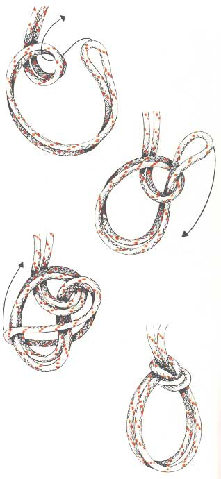

Paalsteek in de bocht
Gebruik
De paalsteek in de bocht lijkt erg veel op de gewone paalsteek, maar in plaats van een tamp te gebruiken neemt men een dubbel touw of een touw waarin een bocht is gelegd. In deze tijd, waarin veiligheid zo vaak onderwerp is van aansprakelijkheidszaken, zijn touwstoeltjes of -zitjes niet meer aan te bevelen voor hoge karweitjes. Maar vroeg of laat kan iedereen te maken krijgen met een situatie die om een snelle improvisatie vraagt. Dit is een knoop die geschikt is voor het laten zakken van een gewonde en voor noodgevallen. Door elk van beide lussen wordt een been gestoken. De gekwetste kan zichzelf vervolgens op borsthoogte aan het touw vasthouden (als hij dat kan), of wordt er aan vastgebonden. De paalsteek in de bocht vermindert de breeksterkte van de lijn tot 40%.
Methode
Men legt een bocht in het touw door het samen te nemen. Hierin legt men een oog waarbij het vaste part onder komt. De tamp wordt hier van onderen naar boven door gestoken. Dan wordt de bocht wijder gemaakt en de hele knoop er doorheen getrokken. De bocht van de tamp wordt rond het vaste part gelegd. Tenslotte wordt de knoop goed aangetrokken door aan de zijden van de bocht te trekken.
